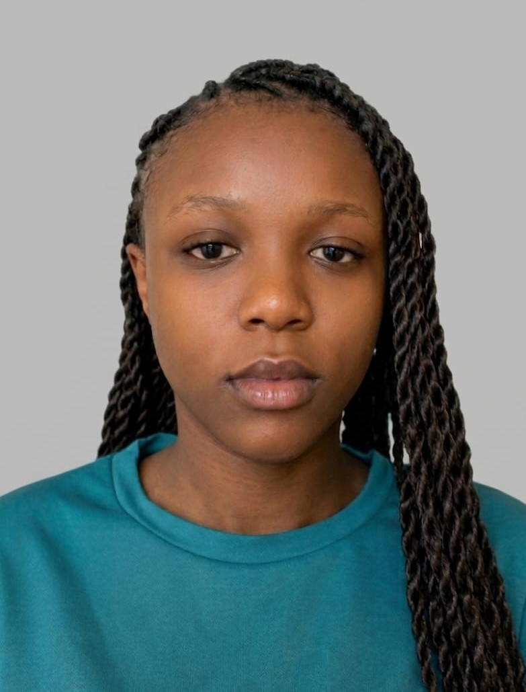

Étudiante en 2e année de Licence Informatique
Passionnée par le développement logiciel, les technologies web et les solutions digitales.
Je suis étudiante en deuxième année de Licence Informatique au Burkina Institute of Technology (BIT). Je m'intéresse particulièrement au développement web, au développement d'applications et aux systèmes informatiques. Mon objectif est de devenir une développeuse capable de concevoir des applications performantes répondant à des besoins réels.
Burkina Institute of Technology (BIT)
Licence Informatique (2024 - 2027)
Sainte Monique
Baccalauréat Série D (2023 - 2024)
Plateforme de recherche d'emploi intégrant une authentification sécurisée, des API REST et une base de données MongoDB.
Technologies : HTML, CSS, JavaScript, Node.js, Express.js, MongoDB.
Voir le projetPlateforme immobilière web et mobile permettant la consultation et la gestion d'annonces immobilières.
Technologies : Flutter, JavaScript, HTML, C++.
Voir le projetApplication web de suivi de santé avec visualisation des données.
Technologies : HTML, CSS, JavaScript.
Voir le projetApplication desktop de gestion et d'analyse de données de santé.
Technologie : Python.
Voir le projet